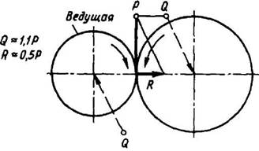
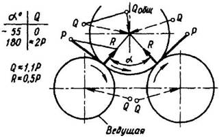
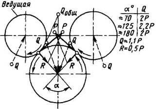
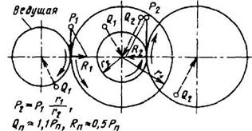

Определение нагрузок на валы
За расчетную нагрузку принимают максимальную длительно действующую нагрузку.
Расчетную нагрузку определяют:
по мощности (задаваемой обычно на входе и выходе коробки передач), КПД и скорости;
по моментам или силам (задаваемым обычно тоже на входе или выходе), передаточному отношению и КПД.
Расчетную частоту вращения вала, мин-1, выбирают соответственно по частоте вращения шпинделя nшп или выходного вала коробки, при которой они передают наибольшие моменты (обычно берут минимальную частоту вращения шпинделя, при которой передается полная мощность).
Окружная сила на зубчатых колесах и цепных звездочках
P = 2T/d,
где d – делительный диаметр зубчатого колеса или цепной звездочки; Т – вращающий момент.
Нагрузку на вал от цепной передачи приближенно принимают направленной параллельно ведущей ветви цепи и равной окружной силе, умноженной на коэффициент, зависящий от положения передачи (для горизонтальной передачи 1,15, для вертикальной 1,05).
Нагрузку на вал (в Н) от ременной передачи при расчете на усталость приближенно принимают направленной вдоль линии центров шкивов и определяют по формуле
Q = 200σ0Fsin(α/2),
где σ0 – начальное натяжение, обычно принимаемое для плоскоременных передач равным 1,8МПа, а для клиноременных 1,2-1,5МПа; F- площадь поперечного сечения ремня, см2; α – угол обхвата шкива, град.

Рис. 8

Рис.9
Так как начальное натяжение при перетяжке в 1,5 раза больше нормального, то наибольшую нагрузку на вал можно определить по формуле
Qmах = 1,5Q = 300σ0F sin(α/2).
На рис. 8-11 изображено графическое определение сил, действующих на вал и подшипники, по заданной окружной силе (для зубчатой передачи с углом зацепления α = 20° и с учетом угла трения ρ = 5…6°).

Рис. 10

Рис. 11
Если нагрузки, действующие на вал, не лежат в одной плоскости, то их раскладывают по двум взаимно перпендикулярным координатным плоскостям и в каждой из этих плоскостей определяют реакции опор и изгибающие моменты, а затем проводят геометрическое суммирование.
Нередко расчет может быть упрощен удачным выбором координатных плоскостей. Например, если окружные силы от ведомого и ведущего элементов взаимно параллельны или взаимно перпендикулярны, то оси координат следует направлять вдоль действия этих сил. Отклонениями от параллельности или перпендикулярности в пределах 10-15° следует пренебрегать, совмещая силы с осями координат. Допускается также совмещение сил в одну плоскость, если угол между ними не более 30°.